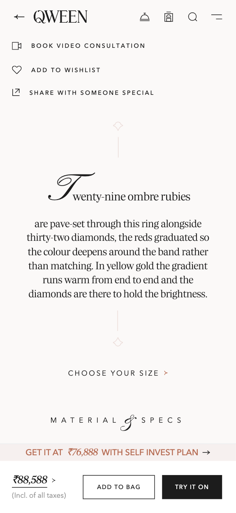
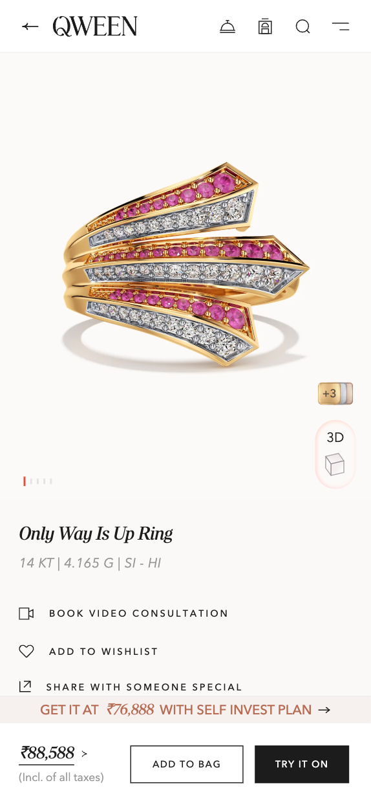
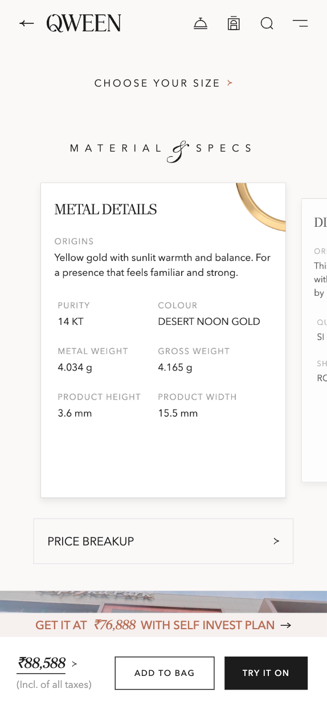
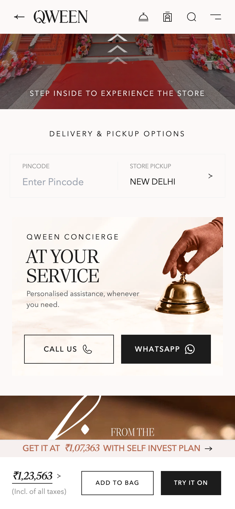
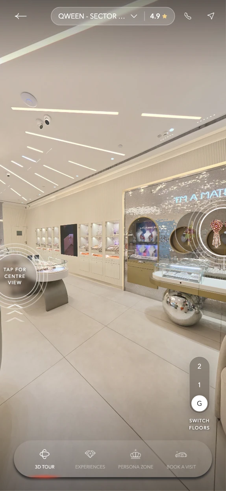
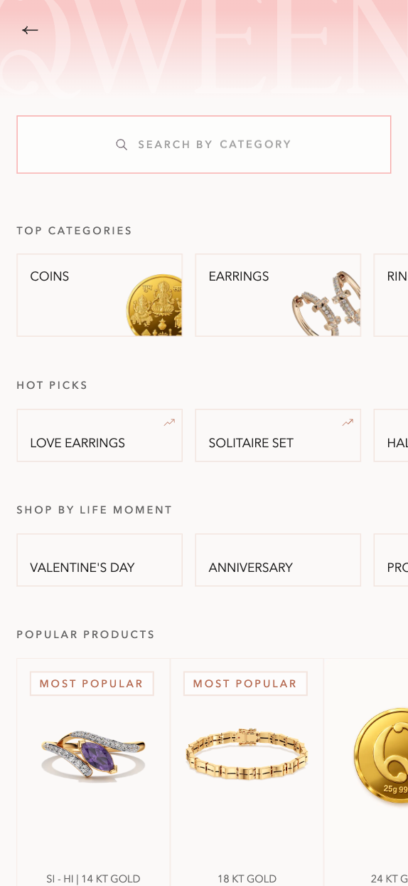
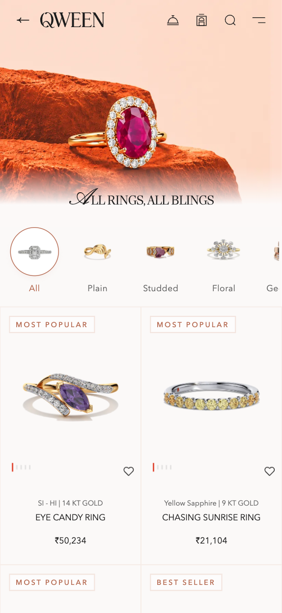

Desire → Understanding → Trust



The product page carries the confidence burden — so it is where most of this case study lives.
01 — The problem
Luxury jewellery is easy to browse online. It’s harder to feel confident buying it online.
QWEEN sells fine jewellery at price points where a single order can cost more than a laptop. The site worked. People browsed it. Very few of them bought. The instinct in that situation is to optimise the funnel — faster checkout, better filters, more urgency. The blocker was never speed.
A buyer standing in front of a ₹2,00,000 decision has no way to reach the certainty a showroom gives them in four minutes: seeing the piece at true scale, understanding what the stone actually is, knowing it can be returned, and feeling like the brand is a house rather than a storefront. Fine jewellery is slow, high-stakes and rare — and most of the ecommerce playbook, tuned for fast and low-stakes, inverts.
The showroom
Traditional ecommerce
The buyer isn’t resisting a sale. They’re missing the certainty a showroom gives for free.
02 — The insight
Don’t replicate the showroom. Recreate what makes the showroom work.
Time spent with the people who sell jewellery for a living was the most useful research of the project. A sales associate carries a compressed, tested model of what a buyer needs and in what order — it just lives in their head. Buyer conversations, session recordings and drop-off analysis confirmed the same pattern. Five things surfaced, and each one has a named consequence later in the product.
Scale is the first unanswered question — and it’s never asked.
Buyers don’t say “I can’t tell how big it is.” They zoom, hesitate, leave. On-model imagery resolves more doubt than dimensions in millimetres.
Returns and certification are read before price.
Above a threshold, buyers hunt for the returns window and the certificate before engaging with the piece. Trust is a gate, not a footer.
Specifications are wanted by a minority, needed by everyone.
Few read the full breakdown; almost all check that it exists. Depth is a credibility signal even when unread.
People shop by occasion, not category.
The model is “something for my sister’s wedding,” not “pendants, 18kt, under ₹X.” Category-first forced a translation buyers were bad at.
The decision is rarely made alone.
Sharing a piece with a partner or parent was a routine, unsupported step. A link without context broke the conversation the buyer was trying to have.
The five confidence moments
These aren’t features. They’re the moments where confidence is won or lost — and the order they arrive in is not negotiable. Everything after this chapter is an attempt to answer them in sequence.
03 — The approach
Designing for confidence, not just conversion.
Principles are only useful when they can settle an argument. Each of these carried a rule, so debates about taste became debates about the rule.
Create desire
Let the jewellery sell itself before asking customers to evaluate it. The piece is the interface; chrome recedes, and no UI element overlaps product photography except a near-silent purchase bar.

Make it tangible
Reduce the distance between digital and physical. Answer scale by comparison, not measurement — and let the buyer see how a piece behaves before they commit.


Explain progressively
Reveal information when customers need it. A summary line is always visible; the full specification is one interaction away. Present, complete, never imposed.

Put trust before commitment
Make reassurance part of the purchase journey. Certification, hallmarking and returns move out of the footer and in front of the price, where the doubt actually occurs.
Keep a human door open
Self-service shouldn’t mean being left alone. A way to reach a person stays within reach throughout, so the experience never traps a hesitant buyer.

A PDP that works isn’t a page. It’s a sequence of answers.
05 — The product experience
The PDP became the confidence engine.
Everything before this page builds desire. This page has to convert it into a decision worth six figures — made alone, on a phone, without a person in the room. It is the hardest surface in the product and it received the most work.
The PDP is the central artefact — shown large, never as a thumbnail inside a card.
Start with desire.
Before customers evaluate the product, they need to want it. The gallery leads with a full-bleed hero at true crop, then an on-model or on-hand frame within the first two positions — establishing scale by comparison before any detail macro. Macro shots are the most seductive asset a jewellery brand owns, and they mislead on size, so they were deliberately demoted.
Beneath the imagery sits the product story — the reference it draws on, the setting technique, why the stones are cut that way. In a showroom the associate tells you this; it’s what converts an object into a possession. It gets its own space, separated entirely from the specification block.
Before customers evaluate the product, they need to want it.
Make the product tangible.
Photography is a fixed viewpoint under fixed light. The experience layer closes the distance to the physical piece — letting the buyer bring it closer, place it on themselves, and see how it behaves.
Explore in 3D
Rotate the piece to answer what a single photograph can’t — proportion, depth, the way a setting sits. Direct manipulation, so the response is instant.
Try it on.
Place the piece on the buyer’s own hand, ear or neck at true scale — resolving the most common reason a considered buyer defers: “how will this look on me?”
See it live.
See how the stones behave as light moves — the thing people tilt a piece under the showroom lamp to check. The experience never begins without the buyer’s action.

Answer the questions that matter.
The summary line reads as a sentence, not a table — stone count, total carat weight, metal — with the full breakdown one interaction away. Research said buyers check that the detail exists far more often than they read it, so it’s present and complete, but never imposed on the majority.
Give customers enough product truth to make an informed decision without overwhelming them.
Make it yours, without leaving the page.
Size, metal colour, purity and gemstone are decided in bottom sheets over the product, not on separate pages. Each choice updates the delivery window and the price in place, so the buyer never loses sight of the piece they are deciding on.


06 — Trust
Trust before price.
Certification and returns used to live in the footer. Session recordings showed buyers leaving the product page to hunt for them mid-consideration — and frequently not returning. On a high-value item, trust isn’t reassurance delivered after the sell. It’s a precondition for engaging with the sell at all.
100% Natural Stones
Stated as fact, not a marketing adjective — the material the buyer is actually paying for.
IGI Certified
Linked to the actual certificate and expandable in place, never a new tab.
5 Year Stone Value Assurance
A commitment stated at the point of hesitation, before the price is reached.
Lifetime Buyback & Exchange
The relationship framed as ongoing — the answer to “what if I’m wrong.”
Trust isn’t a footer detail. It is part of the product experience.
07 — Concierge
Concept exploration — not shippedSelf-service shouldn’t mean being left alone.


The single highest-value thing a showroom provides is a person who has sold jewellery for fifteen years. They can hear “something for my sister’s wedding, she wears mostly gold, budget around this” and produce four correct options in ninety seconds. Self-service replaces that with filters, which require the buyer to already know the answer.
So the door to a person stays open throughout — not as a support link buried in a menu, but as a hand-off available exactly where hesitation tends to occur. The buyer explores freely; the moment they stall, help is one step away, and it arrives already knowing what they were looking at.
Documented as a concept exploration. The reasoning is part of how the confidence problem was framed; it is not a shipped feature.
08 — Ownership
The relationship doesn’t end at checkout.
One of the doubts a showroom quietly answers is “will this brand exist in ten years when I need it resized?” The experience treats ownership as part of the purchase, not an afterthought — lifetime cleaning and resizing, a clear returns window, and the buyback and exchange that make a high-value decision reversible.

Spread the decision over time.
The Self Invest plan turns a single large payment into ten monthly instalments, with one and a half instalments added by QWEEN. It is surfaced on the product page as the price the buyer could pay, and explained in three steps — choose, save, redeem — with a concierge one tap away.
A reversible decision is an easier decision. Ownership is where a high-value purchase is finally de-risked.
09 — Beyond the PDP
The PDP was one expression of a larger QWEEN experience.
Discovery is organised by occasion rather than category, because that is how buyers arrive. Collection reads as editorial rather than catalogue. Each surface does one part of the confidence job and hands off cleanly — but the product page is where the burden is carried, so it is where this study stays.


10 — Outcome
The shift.
For buyers, the questions that used to end a session now have answers in the place the question occurs.
For the business, the design system and content model outlived any individual page — new collections launch against an existing structure instead of a new design cycle.
For the team, motion tokens, a photography shot list and a merchandising contract turned recurring debates into settled defaults.
QWEEN is a growing brand rather than a controlled experiment, so this study reports qualitative shifts rather than before-and-after numbers.
Before
After
Same facts · new order
11 — Reflection
Luxury ecommerce isn’t about adding more information.
The PDP’s content didn’t change dramatically. Its sequence did. Trust before price, scale before specification, story before both — the same facts in the order doubts arrive did most of the work. In luxury, the constraint is the product: every meaningful decision here was about what not to include.
The design problem in categories where the purchase is rare, expensive and emotional is almost never navigation. It is doubt. The goal is to understand which uncertainty is preventing someone from moving forward — and design the experience around resolving it. Find the order, and the interface mostly designs itself.
The showroom is not competition for the website. It is the specification.